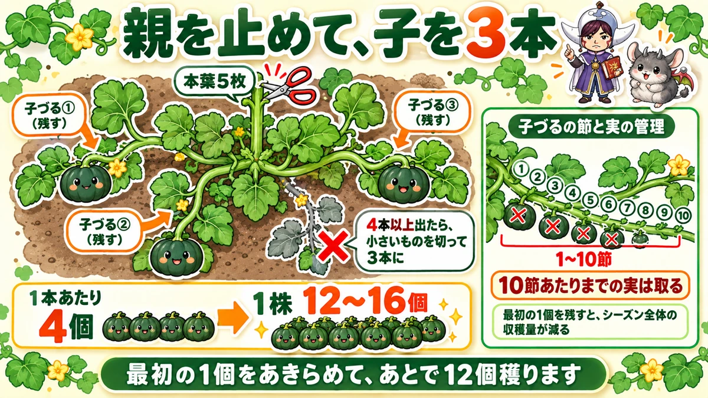
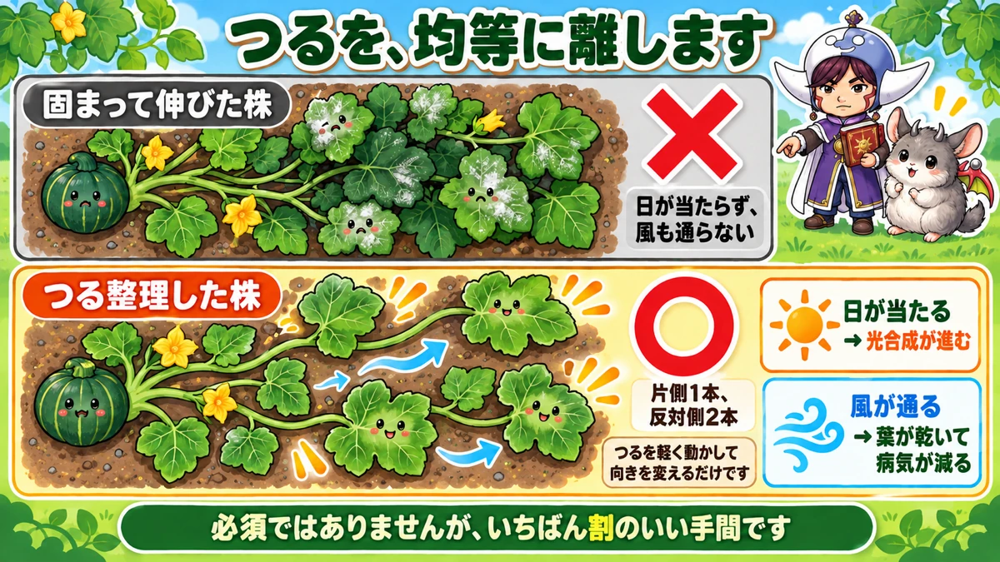
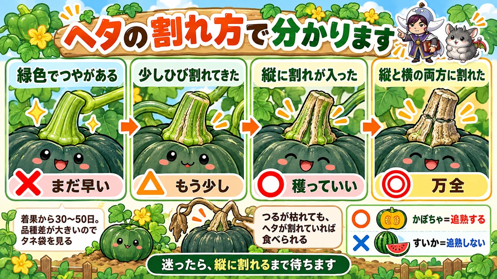

Judge a squash by the stalk, not the calendar 🎃 Cracks along it mean it's ready

🎃 "I have no idea when to cut them."
🎃 "I cut one and it was dry inside and tasted of nothing."
🎃 "The vines are everywhere and I don't know what to do with them."
Hello, I'm Eiko. Eight years of growing vegetables organically and without pesticides, and a teaching licence in science.
Squash is described as "plant it and it grows itself". Half true, half not.
The headline:
Harvest by the stalk, not by the number of days.
When a crack runs lengthwise along the stalk, you can cut it.
Squash takes a great deal of room. A metre sounds excessive until the vines run — crowded, they overlap and disease follows.
And just after planting, lay fleece loosely over them. Small plants are vulnerable to wind, cold and insects, and fleece deals with all three at once. Take it off once it warms and the vines start running.
Stop the main vine at five true leaves

What this diagram says （図解の文字）
- Stop the parent vine, keep three laterals
- lateral ① (keep) ／ ② (keep) ／ ③ (keep) — "five true leaves"
- "If four or more appear, cut the smallest to leave three"
- "Managing the nodes and the fruit on each lateral"
- Count the true leaves — one, two, three…
- At the fifth, cut the tip out
That stops the main vine, and laterals come away from the base.
Reduce the laterals to three
Three or four laterals appear. Keep three. If more come, cut the smallest.
Each lateral gives about four fruit, so 12–16 per plant is the target.
Not stopping it is also valid
Honestly: plenty of people don't stop the main vine. Squash fruits on the main vine too, so letting it run is a normal method. Neither is "correct".
But stopping it makes management easier: three defined directions, and you know where everything is. That's why I do it.
Remove the first fruit
Here's the trap. Early on, a female flower opens near the base of a lateral and sets fruit. Encouraging.
Take it off.
The guide: remove any fruit up to about the tenth node of the lateral. However reluctant you feel.
The reason is the plant's reserves
Let a small plant carry fruit and everything goes into it. The vines don't extend, the leaves don't multiply — and the season's total harvest falls.
Give up the first one and take twelve later. Same principle as edamame, and as peppers.
Space the vines evenly

What this diagram says （図解の文字）
- Space the vines evenly
- ✗ "vines all running together" — "no light reaches in, and no air moves"
- ○ "vines arranged" — "one on one side, two on the other"
- "You only move the vines gently to change their direction"
Left alone, three laterals bunch together and run the same way. The leaves overlap, the lower ones get no light, and no air moves.
So decide the directions yourself:
- One vine on one side
- Two on the other
- Spread as evenly as you can
That's all it is — move the vines gently and point them elsewhere.
It reduces disease
- Light reaches them → photosynthesis
- Air moves → leaves dry → less powdery mildew
Mildew — the white bloom — is the squash grower's usual complaint, and airflow changes it considerably.
Not compulsory. If you have the time, it's the best-value job on the list.
Harvest: read the stalk

What this diagram says （図解の文字）
- The cracking of the stalk tells you
- ✗ "green and glossy" — "too early"
- △ "starting to crack" — "not quite"
- ○ "a crack running lengthwise" — "you can cut it"
- ◎ "cracked both lengthwise and across"
Days won't tell you
Squash is said to take 30–50 days from setting. That range is far too wide to use, because varieties differ enormously. If you want the number, it's on the seed packet or the plant label.
① The look of the fruit
- The shine goes and it dulls
- The colour deepens, going darker
- The markings become distinct
Hard to judge until you've done it a few times. It was for me.
② The stalk — this is the real test
The most reliable sign is where the fruit joins the vine. There are stages:
- Green and glossy — too early
- Beginning to crack — not quite
- A crack running lengthwise — cut it
- Cracked lengthwise and across — fully ready
If in doubt: wait for the lengthwise crack. That's the one line to take away.
Cut early? It ripens off the plant
A useful property: squash cures — it gets sweeter after cutting.
A watermelon doesn't; cut early, it stays that way. Squash can recover from being cut slightly early.
But for storage, take it fully ripe — it keeps far better. If you plan to store them, wait for the cross crack.
If the vine dies, don't throw the fruit away
Late in summer the vine sometimes dies back and it looks over.
If the stalk has cracked, cut it, cure it and eat it. A dead vine doesn't mean a dead fruit — look at the stalk first.
Science bit: the crack is a disconnection 🔬
Why does the stalk crack when the fruit is ripe?
Because the plant is preparing to let the fruit go.
While the fruit is growing, the stalk is the route for water and nutrients. Once the fruit is complete, the plant sets about closing that route: the cells inside harden into a corky layer.
Cork doesn't pass water, and it shrinks — so the surface cracks.
Which changes what you're looking at: that crack isn't damage or decay. It's the plant's message that this fruit is finished. Hence its value as a harvest signal.
To sum up
- ✅ 100 cm spacing, and fleece over them just after planting
- ✅ Stop the main vine at five true leaves; keep three laterals
- ✅ About four fruit per lateral — 12–16 per plant
- ✅ Remove fruit up to about the tenth node
- ✅ Keeping the first fruit costs you the season's total
- ✅ One vine one side, two the other — light and air, so less mildew
- ✅ Harvest by the stalk, not by days
- ✅ Lengthwise crack = ready; both ways = fully ripe
- ✅ Squash cures; watermelon doesn't. For storage, take it fully ripe
- ✅ A dead vine with a cracked stalk is still a good squash
- ✅ The crack is the plant closing the supply line
You don't have to do all of it. Go and look at the stalk of one squash. Green, or cracked — that alone sets your harvest date 🎃
Thank you for reading!